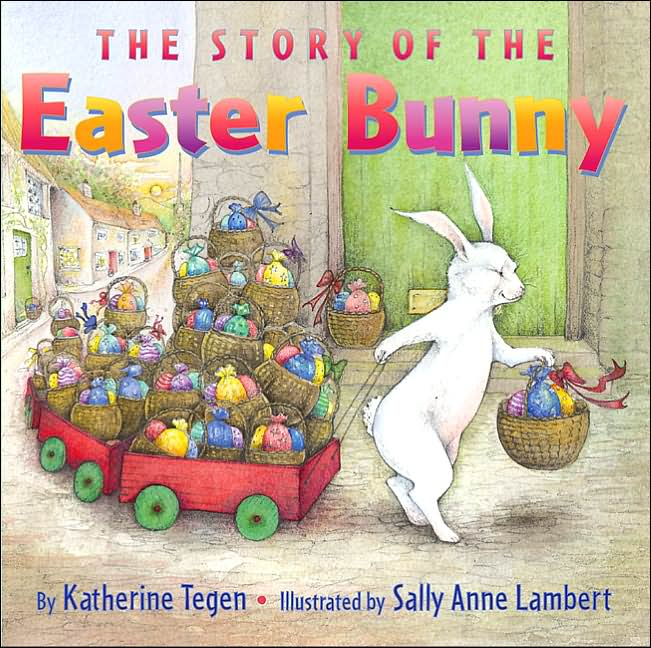

This is my most favorite book I’m reading the boys lately. I love these little dogs so much and it’s such a sweet little story.
Boot & Shoe by Marla Frazee, Amazon

This is my most favorite book I’m reading the boys lately. I love these little dogs so much and it’s such a sweet little story.
Boot & Shoe by Marla Frazee, Amazon

This book has been going strong at our house for a good two years. It’s our favorite! (mine too!) It’s a sweet story about how the Easter Bunny came to be.

We are big time kids books readers over here. Books before nap time, books before bedtime and in between. We are always on the hunt for good books. Just for reference I have a 4 year old and a not quite 2 year old. The 2 year old LOVES LOVES the Pete the Cat books with a passion. Literally he sees those books and squeals in delight.
Pete the Cat and His Four Groovy Buttons
Press Here My friend Kristina introduced me to this one and it’s just SO FUN because it’s very interactive.
This Moose Belongs to Me Anything Oliver Jeffers is a hit in our house, we have all of his books.
Dragons Love Tacos
Lemonade in Winter: A Book About Two Kids Counting Money This is fantastic for teaching about money.
Those Darn Squirrels!
Goldilocks and the Three Dinosaurs: As Retold by Mo Willems Mo Willems of Don’t Let the Pigeon..and Knuffle Bunny fame (of which we highly recommend all of those as well)
Spoon
Pete the Cat: I Love My White Shoes

If you are in possession of a small child of the speaking variety, this book may be of interest to you or him/her. At some point your child starts asking why this and why that. This book will assist you. Trust me. This book gives you answers to such things as Why do we have a belly button? Why do balloons float? Why do some people wear glasses?
Go forth and learn all the things.
National Geographic Little Kids First Big Book of Why

Yes, I am going to talk about that recent (or maybe it was last year, but who knows because I’m always behind the literary times) book phenom: 50 Shades of Grey.
I’ve obviously been hearing about this trilogy for some time now, but never really considered reading it until I saw Barbara Walters interview of her most fascinating people of the year. When Ms. Walters admitted that SHE read the books, I thought, OK, I can totally handle this. So, over the Christmas holidays when my hubby, toddler, and I were bored to tears with no television and in the middle of nowhere visiting my MIL, I thought it would be a good time to start reading said books…
HOLY SHIT BALLS (technical term), I could literally not put the book down! Within a week I had read the first 2 books read and had started on the 3rd. Whew, I am now completely finished and telling everyone I can think of to read these books. Don’t be afraid of the whole BDSM thing, that’s not the main part of the story….READ IT!
You’ll thank me, E.L James, and start begging Hollywood to make the movie already! 🙂
These two books are the latest additions to our growing library. Â One is about a dog and a chick and one is about pig brothers. Â Both are super cute. Â I bought both of them and then realized they are by the same author, Jennifer Sattler. Kid tested and approved.

We’ve always been huge Mo Willems fans around here with our first love being the Pigeon series. Â And the Knuffle Bunny has become the newest favorite series around here for bedtime stories. This series follows Trixie and her stuffed bunny and has the same type of humor that Mo Willems is famous for.
By the way, these would be a great gift for a little one. Â I love when we get books as gifts!!

I get the Serena & Lily catalog in the mail and as I was flipping through it I saw these book ends and just about died from the cuteness. Â I’m particularly fond of ALL OF THEM! Â Ha! No, actually I really love the dinosaur. Â Are you a book end fan?
Menagerie Bookends, Serena & Lily

Are you stumped on gift buying for anyone? Â I’ve gathered up some items that I think might work or at least point you in the right direction.


Recent Comments